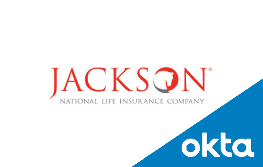

Jackson National Life
Business Need:
Jackson.com currently provides access to insurance and annuity policies to millions of its customers. As of early 2017, Jackson was required to meet regulatory and compliance needs as well as provide an enhanced security platform for its users.
Solution:
MASS, Inc. participated in a multiphase implementation project to upgrade Jackson’s external identity management systems to current standards. For the first phase, we integrated Jackson’s internal access management system (PRISM) with Okta, the leading cloud-based identity management platform. This integration required developing web services using Okta APIs. Its delivery paved the way for the next phase of customer security enhancements which included developing services to enable users in multi-factor enrollment and authentication. As of March 2018, Jackson.com went live with its new security and identity systems which are now compliant with New York State DFS Cybersecurity regulations.
Mercedes-Benz Financial Services (MBFS)
Business Need:
Currently MBFS uses an antiquated mainframe system (Lemans) for leasing its vehicles. Also, the lease end statement generation process is repeated in multiple scenarios such as when dealers ground the vehicle and during overnight schedules. This leads to an inefficient and sometimes cumbersome billing process.
Solution:
MASS, Inc. developed a web service layer called LES to replace Lemans and consolidate the lease end statement generation steps as a common process (by combining data retrieval procedures and all its business rule lookups in one place). Since its delivery, existing consumer systems such as Remarketing Gateway now rely upon LES as a more modern and formal system for relevant queries.
For this project, MASS, Inc. was the implementation partner and provided its consultants to design, implement, test and deliver LES successfully. LES went live on May 2016.
NeoTrade
NeoTrade is a cloud based platform that provides stock market analysis & actionable information to investors. It is an internal product of MASS, Inc. and is used as a trading tool for investment research. To date, NeoTrade has helped MASS, Inc, its founders and partners achieve notable yearly investment returns.
Value Proposition:
There is a clear consensus that investors need help figuring out entry/exit price points on stock market securities and that analysts’ recommendations are not always right. NeoTrade solves this pain point by seeking answers from market data, news & current events as well as price/volume changes.
Solution:
Implemented NeoTrade into two major components: DataStream & UI. NeoTrade DataStream is a RESTful services API that delivers stock and market insights on all NYSE/NASDAQ traded securities. The API also compiles real time analysis reports that are used by firms like Benzinga.
NeoTrade UI is the front-end application that provides price analysis & investor sentiment on individual stocks.